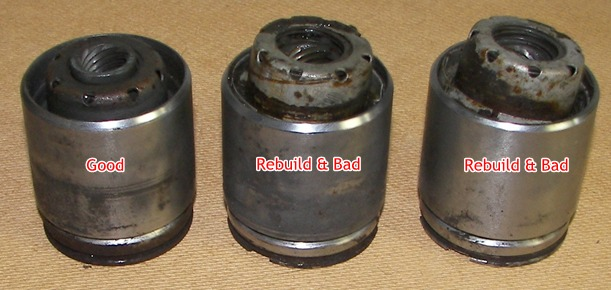

Go Home
Site Map
Go Home
Site Map
Brake Recall and Adjusting the Rear Brakes
False Hope
I've said:
Parking brakes should self-adjust but often don't. GM said the rear disk brakes require periodic use of the hand brake to maintain proper adjustment. I'm not going to try to explain why. It's just the way they are built. (It's essentially a design problem.)
I've said this and is true but it is too simple and was posted years ago before I realized GM and others blaming owners for not using the parking brake was and is total bull crap. Worse, GM's TSB 88-5-10 released 06/88 and Aftermarket (Example at GA club site) give people the idea than manual adjusting the rear brakes are Normal operation but that is far from the truth.
Why Ogre?
Because GM won't pass FMVSS to get new models on the road with cars made to use parking brake to adjust "service" brake. (Service brakes are main brakes for the vehicle.) FMVSS 105 states:
S5. Requirements.
S5.1 Service brake systems. Each vehicle shall be equipped with a service brake system acting on all wheels. Wear of the service brake shall be compensated for by means of a system of automatic adjustment. ...
Plus GM's Adjustment TSB said:
The 1982-88 Firebird, 1984-87 Fiero, and 1984-88 6000 STE vehicles with the rear disc brake calipers are designed to automatically adjust. Some vehicles may experience increased rotor to lining clearance if the rear calipers do not adjust fully.
(I added the underline.) Many have seen the TSB but just don't read and understand that statement. Automatic means no actions from the Driver. This TSB is more proof that the pistons often have problems.
The Recall
Many have seen the recall than affect some cars including 84-86 Fiero? Michigan Fiero Club Home has E-Brake recall TSB in Tech Tips.
NHTSA Recall only affects manual transmission cars because they need the parking brake more so then automatic transmission cars. Problem is automatic cars have the same problems. Proof is GM TSB # 88-5-19A applies to 82-88 Firebird, 84-87 Fiero, 83-88 6000 STE w/ Auto trans but is not part of NHTSA recall. The Recall TSB and this are basically the same text etc on fixing same problem.
Other models with rear disk brakes with the same piston design, including 1988 Fiero and 1980s Cadillac Seville, have the same problems but NHTSA recalls only cover a small fraction of cars. People doing Seville rear gets vented rotors but calipers with same problems as Fiero calipers.
Blaming owners hides the fact that the brake design had defects and getting the owners to use the parking brake might help the system to work normally.
Car companies and parts makers often fight NHTSA Recalls or even hide data from NHTSA because they cost money. Big examples: Takata Air Bag Inflators and Toyota Gas pedal recall. When they do agree or force to recall vehicles, they wanted to do the job as little work and parts as possible to save money. This is most likely why the brake recall only applies to manual transmissions because the automatic transmissions have the parking mechanism built-in and the owners often don't use the parking brakes.
Manually Adjustment or using Parking Brakes
Using Parking/Emergency brakes or any other manually adjustment might help but often is useless. I used my method for years because using P-brake didn't help. Had to adjust every year... Even many rebuilt calipers have same problems or worse.
Pistons that won't self adjust can blow out the back of the piston set causing the pads to drag on the rotor. Pad dragging is a big problem and can cause the pads to wear out fast, the rotors to warp, even cause fires or the brake fluid to boil.
These two dead Pistons came from my car to fix dragging problems causing the rotors to warp. These were Pistons that came in rebuilt calipers. (Rebuilt calipers often have rebuilt or used Pistons.)

(The "Good" piston is an old style and is a bit different than "bad" pistons. Old style has the "adjusting nut," the threaded part, that goes thru back cover as above. New style the "nut" is almost flushed with back cover. Picture is what I had at the time.)
The blowout happens when inner piston is stuck and then the pads wear. That creates a big load on the inner spring when you push the brake pedal that pops out the sheet metal "cover."
Only thing help was installing Recall Piston kit. (Kits are gone.) The upgrade piston kit changes you can see: The new piston looses yellow plug, moves Vent hole to the side behind the dust boot go sleep, and has "Black Oxide" coating. Piston has internal changes too.
If you have problems retracting the Pistons and the adjustment screw turns then you likely have failed Pistons inside like the above picture. Remember that using the clamp to compress the piston during works does not need much force. If you have problems turning the clamp with your fingers then something is wrong. You can find new rebuilt parts with blown Pistons right out of the box or a few days or months after driving. Many of the rebuilt calipers come with a 90 day warranty or less.